This tour was booked through Kesari. It was a trip of 10 days. We were to visit Mizoram, Tripura, Manipur, Nagaland, and Assam. But due to unexpected student agitations in Manipur, the Manipur trip was cancelled. Since the trip began in Mumbai early morning on 30th April, we had to leave Pune on the 29th night after dinner via a cab.
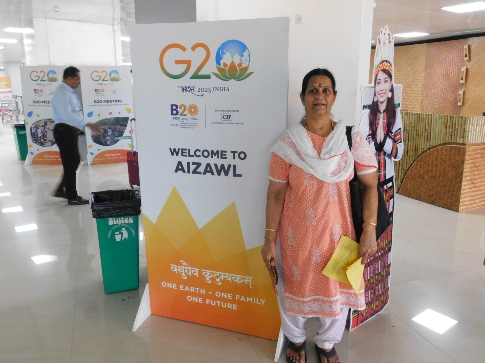
The IndiGo flight left Mumbai at 6:10 am and reached Guwahati at 8:30 am. After a halt of 30 minutes, we proceeded to Aizawl, the capital of Mizoram State. From Guwahati to Aizawl is a 40-minute air travel. We reached Aizawl at 10:20 am. The airport name is Lengpui.
In this state, visitors are required to apply for an inner line permit to enter. At the airport, they gave us a form, and after it was duly filled and signed, a copy with the official signature and seal was given back to us.
From the airport, we came to the hotel in cabs arranged by Kesari. The hotel name is Floria, located about 20 km away from the airport. Aizawl is a hilly place with an altitude of 4000 ft. The hotel room was good. We had our lunch, and after a brief rest, we went to Lalsavunga Park.
The attractive item of the garden is the hanging bridge.
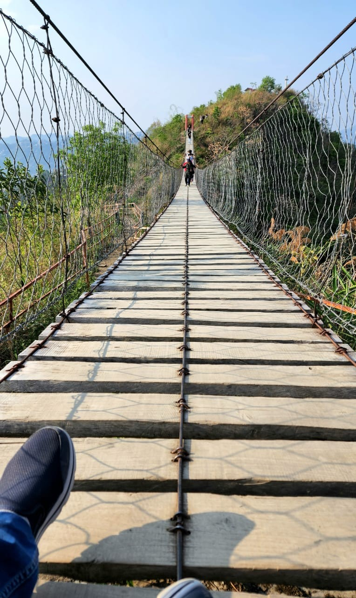
In this state, people speak a local language called Mizo and English. All display boards are in English; Hindi is not very popular. Roads are very narrow. For the Mizo language, the English script is used. Bamboo plants are grown abundantly. After the visit, we returned to the hotel. The hotel was in the city, and we roamed around the streets, but found nothing new to buy. Dinner was simple, with chapati, Rajma, and gulab jamun, and was quite good.Morning breakfast was good; puri and sabji were available, along with bread, oats, and fruits. After a heavy breakfast, we proceeded to the Zoological Park of Aizawl.
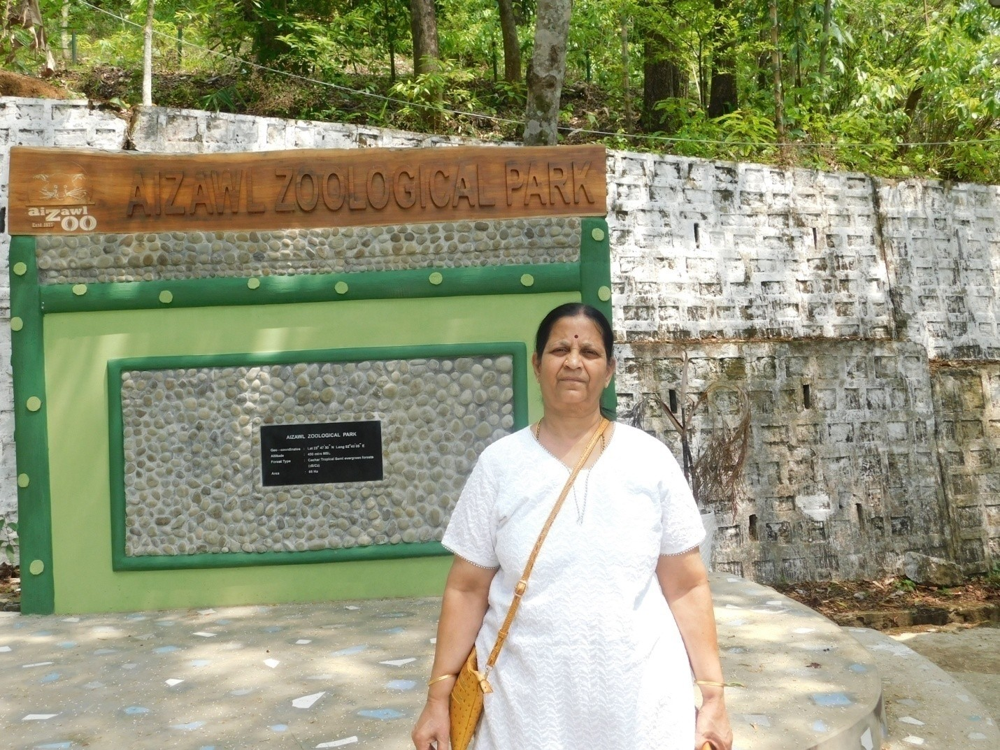
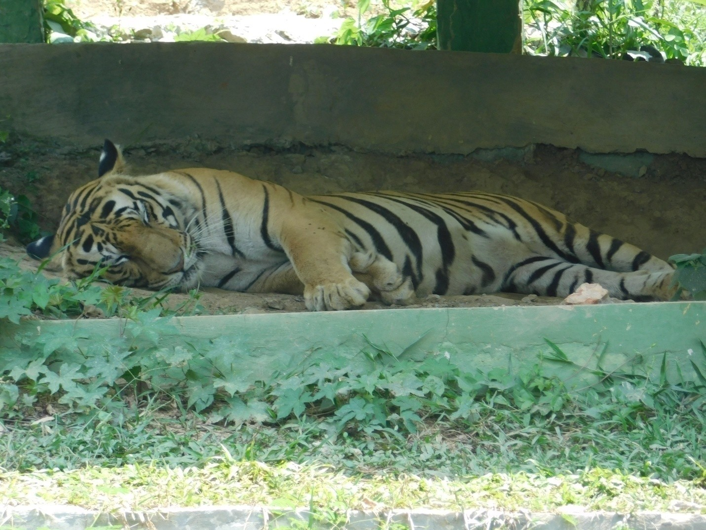
It was about 20 km from the hotel. Being Monday morning, traffic was heavy. In this state, people have a lot of traffic sense. Motorists and bikers adhere to traffic rules. Unnecessary overtaking, rash driving, and driving on the footpath were not seen. Pedestrians are respected.We reached the park around 10 am and walked around for about 3 km. In the park, we saw different birds, a tiger, snakes, etc. We took tea. This park was almost like a forest, full of trees and bushes; walking was enjoyable. We spent around 2 hours in this park.
Then we proceeded to the famous Solomon's Temple.
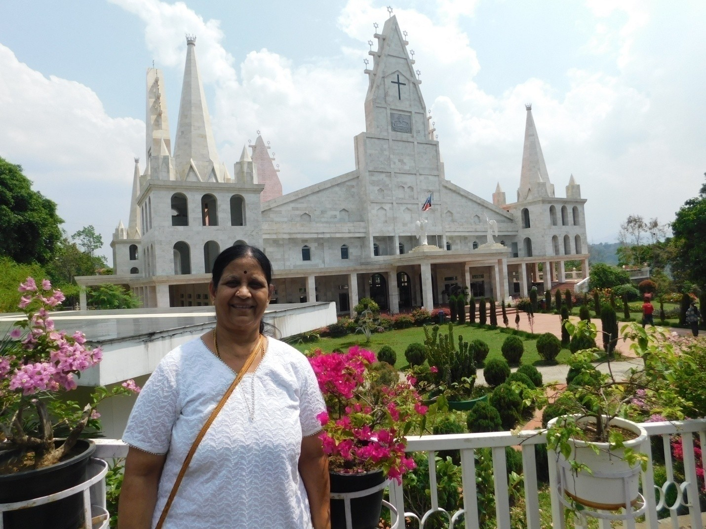
It is a beautiful church in the valley called Kidron. Construction of this temple started in Dec 1996 and took nearly 20 years to complete. A nice garden is maintained around this beautiful church.After the church, we went to the Mizoram State Museum. It is not a big one; a few textile items, tribal weapons, and photographs of late leaders of Mizoram were kept. After the museum, we returned to the hotel and had lunch—dal, chapati, mixed vegetable sabji, and ice cream were served. The corn soup was good. In the evening, we went around the street market called Bara Bazaar, but we didn't see anything great and didn't buy anything.
After breakfast, we left Hotel Floria for the airport, an hour's travel. Our next destination was Agartala. It was not a direct flight; we took a flight from Aizawl to Kolkata, reaching there around 1 pm. We had veg pizza at the airport for lunch. The flight to Agartala was on time, and we reached around 4:30 pm. The airport name is Maharaja Bir Bikram Airport. Kesari arranged cars for the group. On the way to the hotel, we took coffee.
While traveling from the airport to the hotel, I observed that the city is clean. I didn't see heaps of plastic waste or garbage accumulations. Also, motorcyclists and car drivers meticulously observe traffic rules; I never saw any overtaking or signal breaking. Our stay was arranged at Hotel Polo Towers, about a 30-minute drive from the airport. The hotel was too good. The room was very spacious with rich furniture, centralized air conditioning, powerful Wi-Fi, and luxurious overall. Dinner was served between 7:30 to 10 pm and was rich with a variety of dishes. Pani puri was the special item; rasgulla and many more sweets were kept for dinner.
Breakfast at this hotel was rich, featuring South Indian dishes like idli, vada, masala dosa, and uthappam, alongside different types of cakes, bread, cornflakes, and oats. After breakfast, we traveled some 50 km to Udaipur and visited the Tripura Sundari Temple.
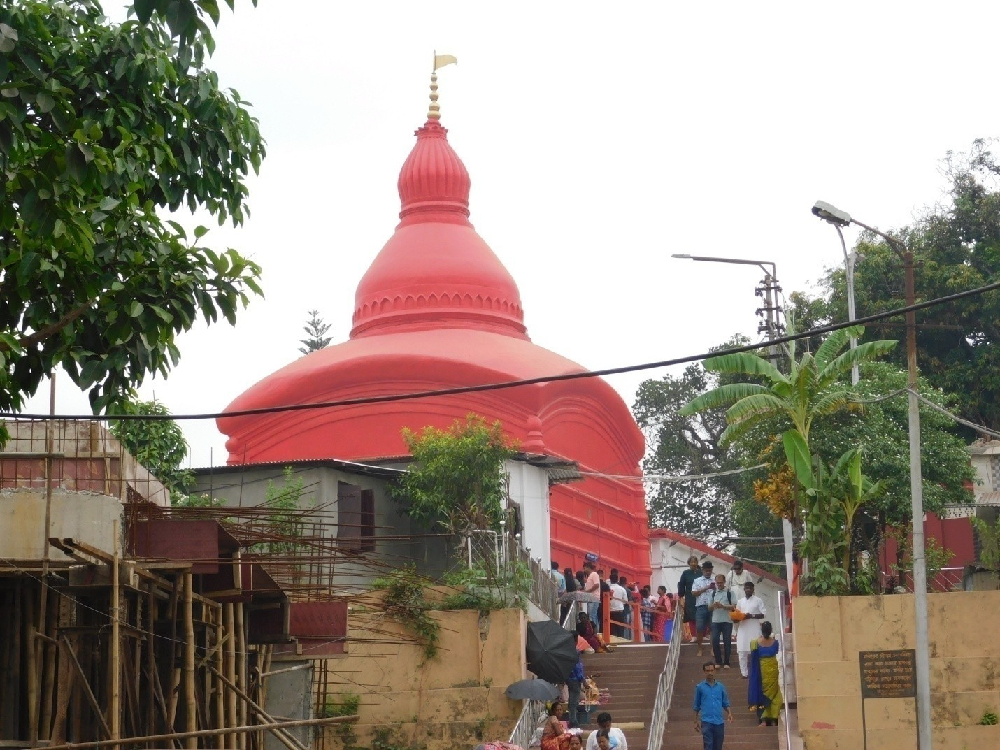
This is one among the 51 Shakti Peethas. The temple was not very crowded, and there is a big lake in front of it.After the temple visit, we traveled around 30 km to see Neermahal.
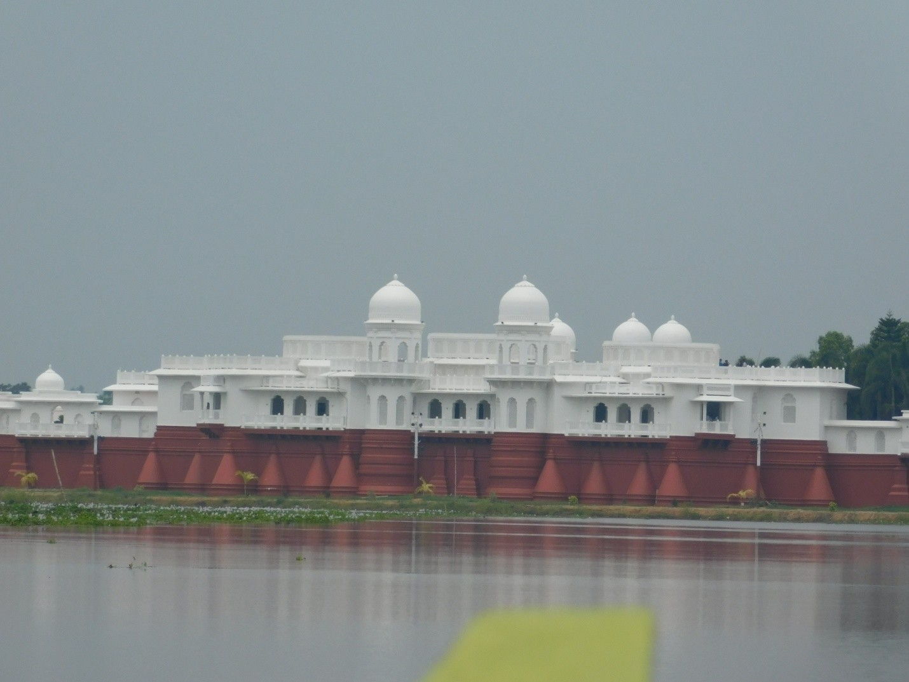
The Mahal is beautiful. It was a palace built by Bir Bikram Kishore Manikya, constructed by the British company Martin and Burns. Construction started in 1930 and was completed by 1938 at a cost of 10 lakhs. This palace has 24 rooms and amazingly still looks pretty new. There are gardens around it and white marble flooring. The palace is in the middle of a lake, and we took a 30-minute boat ride to reach it.Then we proceeded to the Agartala State Museum, where photography is strictly prohibited. This museum mostly exhibits the culture of the tribes of the North East states. As this state borders Bangladesh, the exhibition also describes the 1971 Indo-Pak war and the refugees who came to Tripura. After the museum, we went to the Ujjayanta Palace. A few people went to Agartala Bazaar afterward, but we skipped the shopping and returned to the hotel.
The most important program was the visit to the Unakoti Rock Carvings.
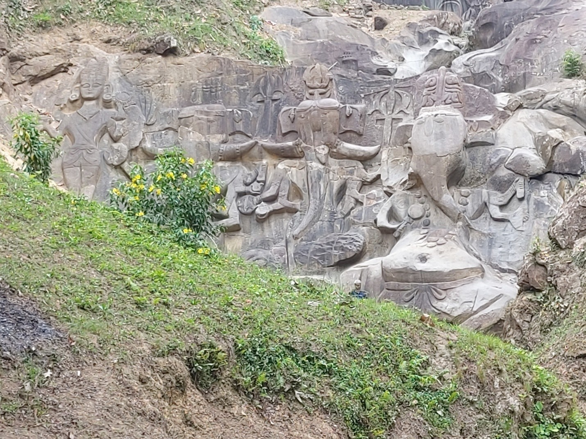
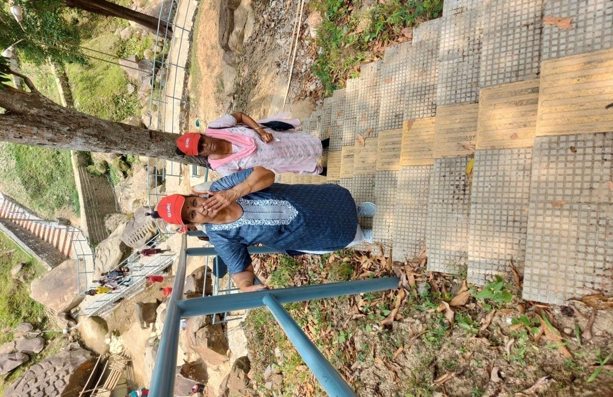
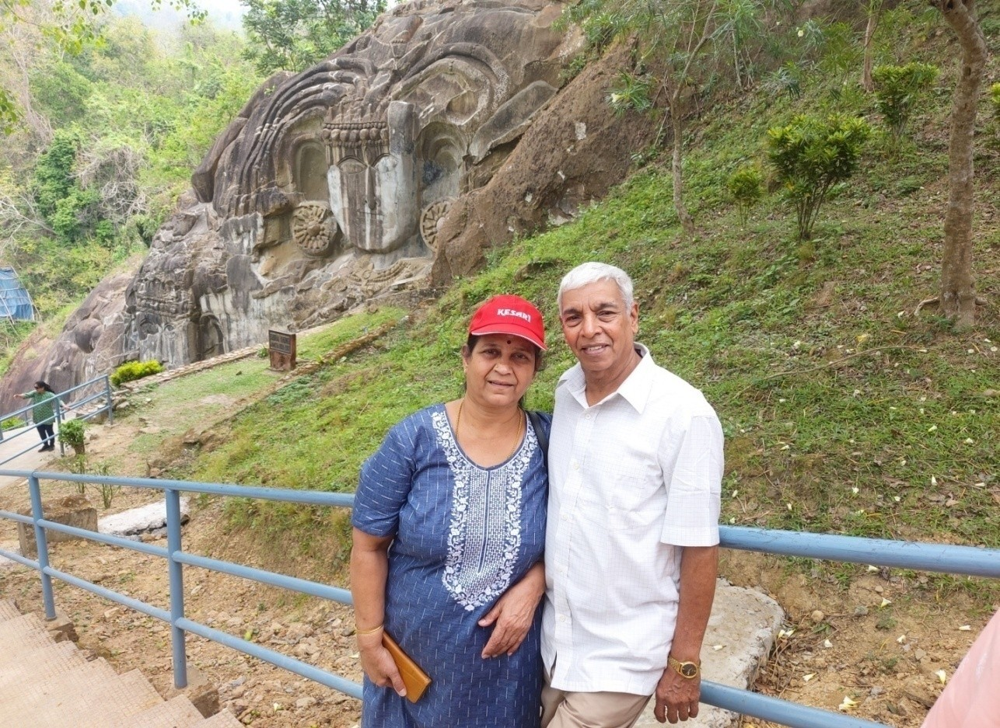
People come from all over the world to see these, as they are considered the largest in Asia. Unakoti is about 50 km from Agartala. We left the hotel at 6 am with packed breakfasts. After an hour's drive, we had tea at a roadside stall. Unlike other states, there are very few tea or coffee shops here, and even those use milk powder. We never got a good tea or coffee in the whole North East. The weather was good—not very hot and drizzling slightly.In some places, the road was very bad due to rain; in some diversions, the mud road became so slurry that cars moved with great difficulty. Somehow, without any bad adventures, we reached Unakoti. Unakoti means "one less than a crore," and it is believed there are 9,999,999 carvings here. It took nearly 3 hours to see them completely. Cameras are not allowed, only mobile photos. The carvings of Lord Ganesh, Lord Shiva, and Lord Vishnu are famous. After seeing the carvings, we had lunch at a roadside hotel and took a different route back, reaching the hotel around 6 pm.
Because of the unrest and curfew at Imphal, our Manipur visit was cancelled. Consequently, we stayed one more day in Agartala and visited the Bamboo Village.
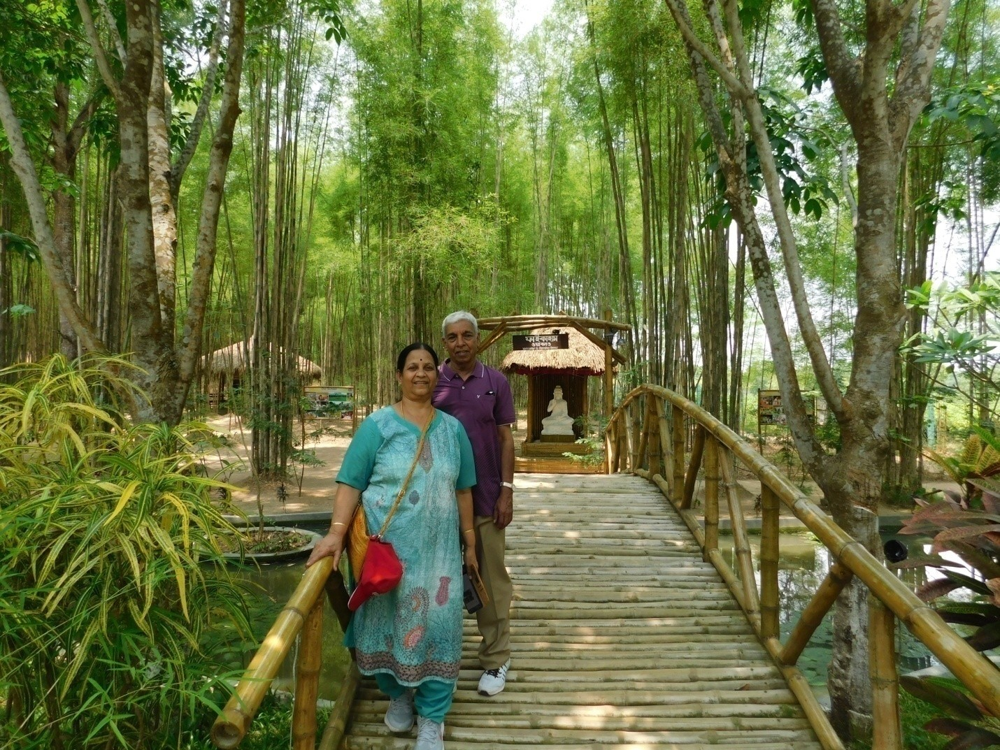
It is about an hour from the main city near the India-Bangladesh border. It is a large bamboo farm with many interesting things made entirely of bamboo: bridges, cane furniture, swings, watchtowers, and a cottage. They also sell bamboo articles like baskets and trays.Next, we visited the Durgabari Tea Factory. They showed us the complete process of how tea dust is made from freshly plucked leaves. We bought some freshly processed tea dust. We returned to the hotel for lunch, and after a rest, left at 3:30 pm for the India-Bangladesh Border Checkpost.
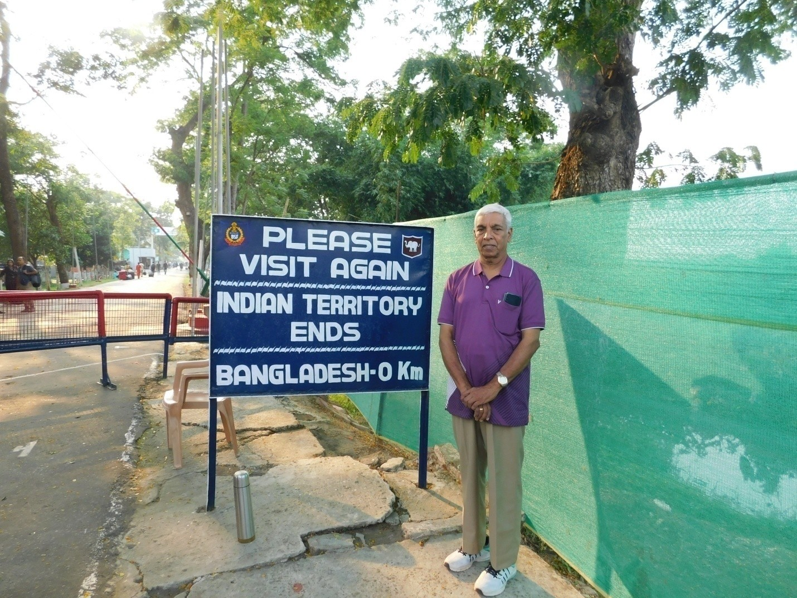
People with valid visas can cross here. Flag hoisting ceremonies take place on Saturdays and Sundays. We took photos there.Finally, we visited Heritage Park.
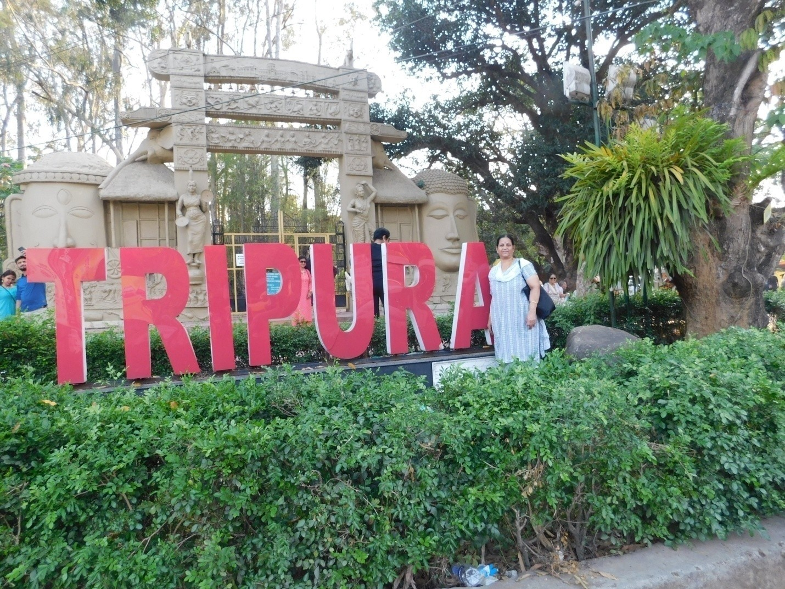
This park exhibits all the important places of Tripura state in miniature form. It was very interesting.With the Manipur visit cancelled, Kesari modified the plan to fly to Guwahati and then to Dimapur. We flew Akasa Air from Agartala to Guwahati. We left the hotel after breakfast at 10 am, collected packed lunches, and reached the airport by 1 pm. Due to technical snags, the flight was 3 hours late. Akasa Air provided free snacks and tea. We eventually boarded at 6:30 pm and reached Lokpriya Gopinath Bordoloi International Airport.
We reached Hotel Oriental Grand in a 20-seater van after an hour's travel. It was a posh hotel with spacious rooms and a wide variety of dinner dishes. Though our stay was less than 12 hours, it was memorable, especially the live music during dinner.
We woke up early and had breakfast at 7 am before leaving for the Kamakhya Temple.
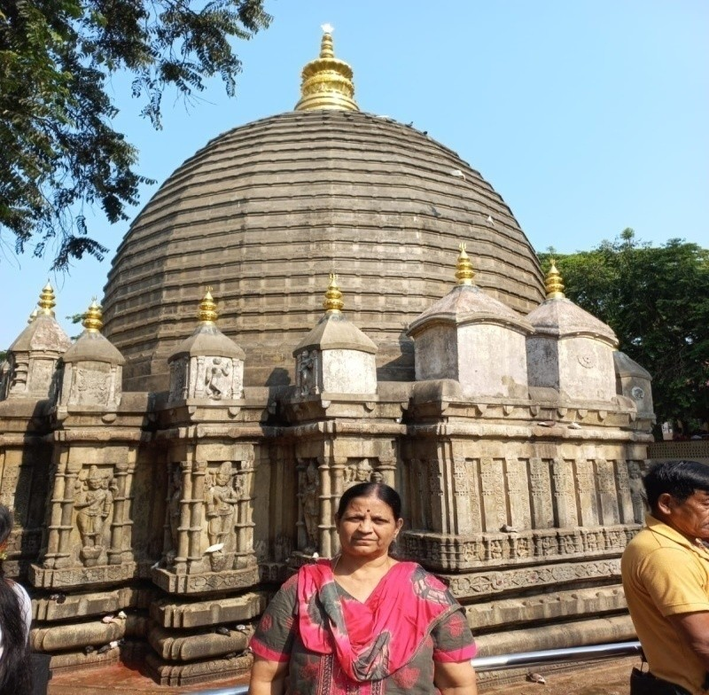
This temple is the first among the 51 Shakti Peethas. There were nice arrangements, and we had a good darshan. After the visit, we reached the airport at 10:30 am for our flight to Dimapur. Again, the flight was late, leaving at 1:45 pm instead of 12:20 pm. The travel time was 40 minutes.We reached Dimapur by 2:45 pm and proceeded to Kohima in five Innova cars. It is 60 km from Dimapur airport. We had lunch at an ordinary but good hotel on the way and reached Kohima around 7 pm. We stayed at Hotel De Oriental Grand, which was good.
After breakfast, we left the hotel to visit the Nagaland Heritage Village (Kisama).
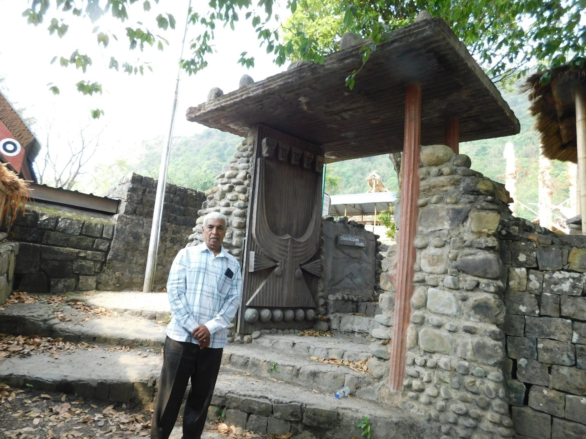
Many tribal communities stay in Nagaland, each with a different culture, and this exhibition depicts them. We spent an hour there and then left for the Kohima Cathedral Church, a very large church built by Father Abraham from Kerala. Afterward, we visited the War Cemetery.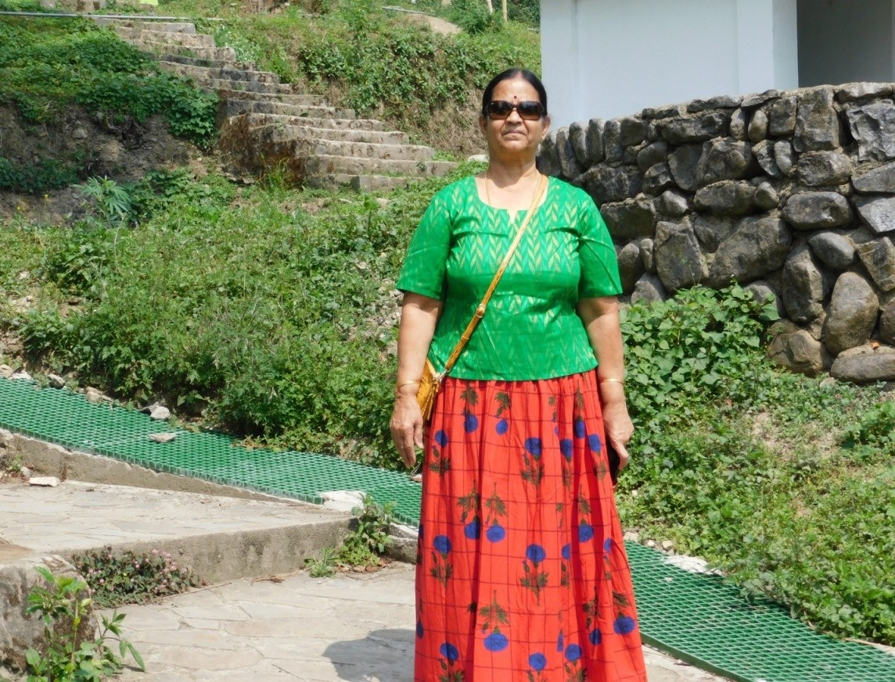
This cemetery was created by the British to honor soldiers who died during WWII. I found many graves of young soldiers aged 19 to 23, both British and Indian.In Kohima, roads are narrow and people park their cars on the road, yet they have great patience and traffic sense. Overtaking or breaking the queue is rare. Movement was slow, and it took a long time to reach the Assam border. We had lunch at a roadside hotel before entering Assam. From Kohima to Jorhat is around 150 km. The road was not too bad, and we reached by 5:30 pm. We stayed at the Kaziranga Golf Resort, which was in a tea estate. The cottage was too good, and a beautiful garden was maintained. Kesari organized a gathering with games, followed by a good dinner at 9 pm.
After breakfast, we proceeded to Majuli Island.
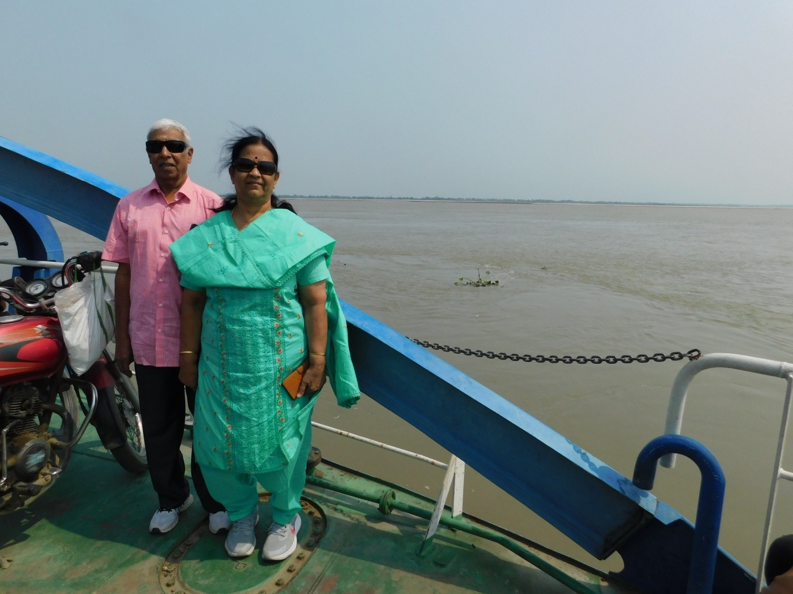
This island is in the Brahmaputra River, an hour's travel from the hotel. Like the Ganga, there are many ghats for ferries; we boarded at Nimati Ferry Ghat. Kesari booked tickets on a large ferry that carries motorcycles and cars. The hour-long sail on the two-deck ferry started at 9:30 am. We reached Kamala Bari Ghat. Majuli is about 10 km wide and 50 km long.The island features only Vishnu (Lord Krishna) temples, maintained by celibate Vaishnavas who stay in houses around the temples. There are 36 Krishna temples here. We visited Auniati Satra.
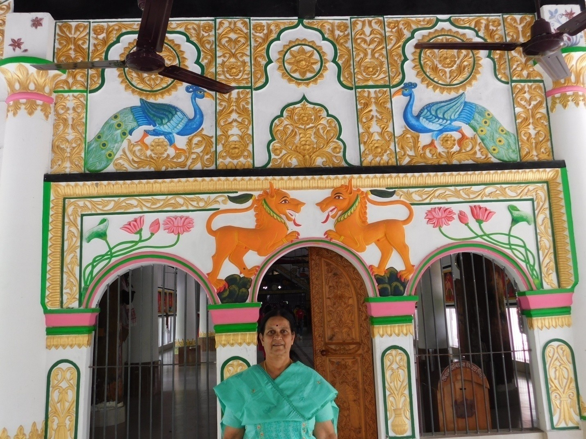
"Satra" indicates a sacred place. The main deity was brought from Puri. There were no restrictions on photos. We also visited the small Krishna museum in the complex. Black rice is popular here, and they make kheer from it. Next was Kamala Bari Satra, where only the Bhagavad Gita is worshiped instead of a deity.We then went to the mask-making center managed by Hemant Goswami, a 2023 Padmashree award winner. They make masks of legendary heroes for dramas, an art dating back to the 17th century. Sadly, the award winner lives in poor conditions, though some tourists donated money. After a typical village lunch of chapati, dal, and rice, we returned via ferry to Jorhat. The return trip took 30 minutes longer against the river flow. We reached Nimati Ghat by 5:30 pm and returned to the resort.
We woke up around 5:30 am. Here, the sun rises between 4:30 to 5 am, so it was very bright. After coffee, we walked around 4,000 steps, had a heavy breakfast, and collected some plants and "suntaikai." By 11 am, we left for Jorhat airport. The flight to Kolkata was 45 minutes, followed by a 2.5-hour flight to Mumbai. We reached Mumbai at 9 pm and took a cab to Pune, arriving home by 12:30 am.
This eleven-day trip was good, and fortunately, we didn’t have any health issues during this trip and safely returned back home.
Journey Reflection
This 11-day odyssey through the Seven Sisters was a profound experience of culture, discipline, and natural beauty. From the narrow, respectful streets of Aizawl to the ancient rock carvings of Unakoti and the spiritual satras of Majuli, the journey showcased a side of India where tradition and traffic sense go hand in hand. Despite the unforeseen cancellation of the Manipur leg, the warmth of the hospitality and the serenity of the tea estates in Assam provided a perfect conclusion to a safe and memorable exploration of the North East.